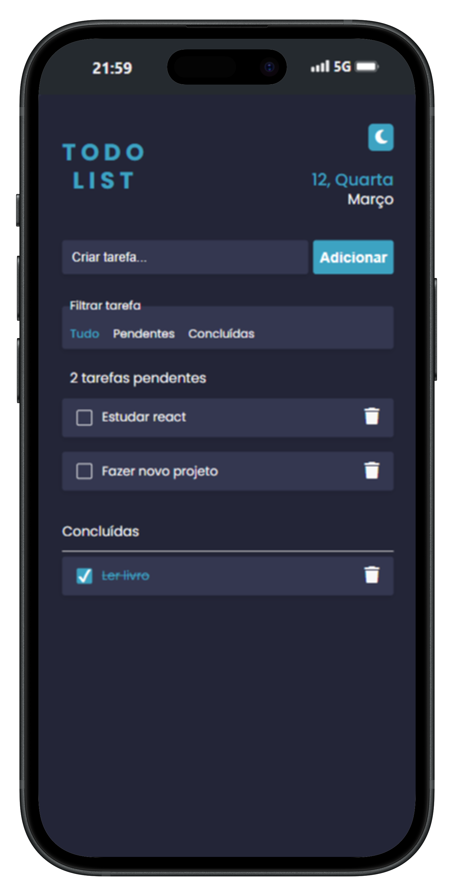
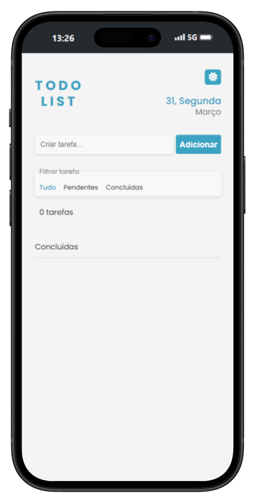
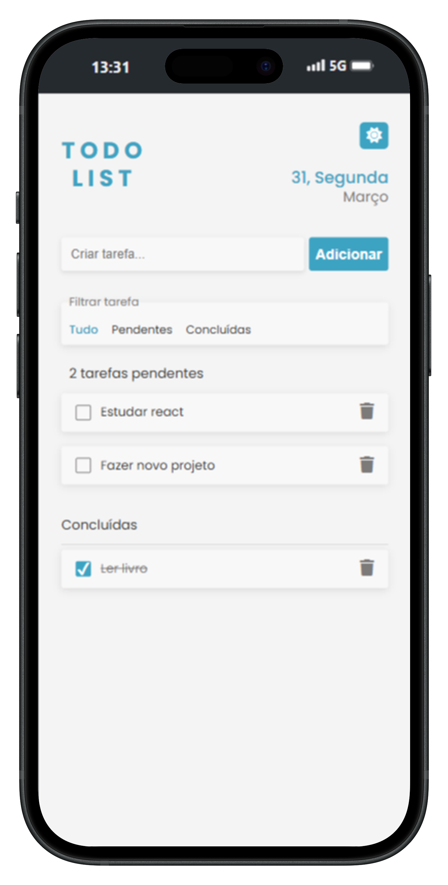

Todo list
interativo

Sobre o projeto
Uma solução para gestão de tarefas
Uma aplicação de lista de tarefas (To-Do List) com funcionalidades básicas e avançadas, como adicionar, marcar, remover e filtrar tarefas.
Este projeto foi um desafio pessoal que desenvolvi para praticar e
consolidar meus conhecimentos em HTML,
CSS e JavaScript .
Criei tudo do zero, desde a interface no Figma até a implementação
das funcionalidades. O objetivo era criar uma aplicação simples,
porém completa, que oferecesse uma boa experiência ao usuário, tanto
no desktop quanto no mobile.
Ferramentas Usadas
Figma (para o design)
HTML, CSS, Javascript
Cronograma
1 semana (Fevereiro-2025)
Recursos & Experiência
- Adicionar, marcar e remover tarefas: Interface intuitiva para gerenciar tarefas de forma fácil e rápida.
- Filtro de tarefas: Opções para visualizar todas as tarefas, apenas as pendentes ou apenas as concluídas.
- Dark mode automático: A aplicação se adapta ao tema do sistema do usuário (light ou dark).
- Persistência de dados: As tarefas são salvas no localStorage, garantindo que não sejam perdidas ao atualizar a página.
Desafio e Aprendizado
Desafios
- Implementar o dark mode automático exigiu uma pesquisa sobre como detectar as preferências do sistema do usuário.
- Garantir que as tarefas fossem salvas corretamente no localStorage e atualizadas em tempo real foi um desafio técnico interessante.
O que aprendi
- Aprendi a manipular o localStorage de forma eficiente e a criar interfaces que se adaptam ao tema do sistema.
- Melhorei minhas habilidades em JavaScript puro para criar funcionalidades dinâmicas sem depender de bibliotecas.
Processo criativo
No wireframe inicial, o projeto tinha um design mais simples, com o dark mode sendo ativado apenas automaticamente, com base nas preferências do sistema do usuário. Durante o desenvolvimento, decidi adicionar um botão de alternar tema para dar mais controle ao usuário.
Estrutura e Identidade Visual
Visão geral da estrutura e identidade visual do projeto, incluindo wireframe, tipografia e paleta de cores. O design do aplicativo foi cuidadosamente planejado para garantir uma experiência intuitiva e agradável, com transições suaves entre os modos claro e escuro.
Wireframing
Definição da estrutura básica e fluxo de interação
Visual Design
Aplicação de cores, tipografia e elementos visuais
Prototipagem
Criação de protótipos para testes
Wireframes
Estrutura básica da aplicação em diferentes dispositivos.
Sistema de Design
Elementos fundamentais que compõem a identidade visual do projeto.
Tipografia
Poppis
Paleta de Cores
O Projeto Final
O resultado é uma aplicação limpa, intuitiva e funcional, com foco na usabilidade e na experiência do usuário em diferentes dispositivos e modos de visualização.


